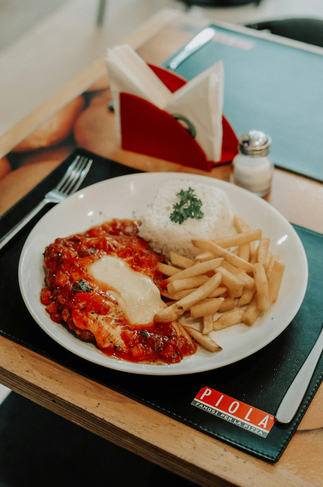

Back to Recipes
Chicken Parmesan Recipe

Description
This crispy chicken parmesan is a classic Italian-American dish that's perfect for family dinners!
Ingredients
- 4 boneless, skinless chicken breasts
- 1 cup all-purpose flour
- 2 eggs, beaten
- 2 cups Italian breadcrumbs
- 1 cup grated Parmesan cheese
- 2 cups marinara sauce
- 2 cups shredded mozzarella cheese
- 1/2 cup vegetable oil
- 1 teaspoon garlic powder
- Salt and pepper to taste
- Fresh basil for garnish
Instructions
- Preheat the oven to 425°F (220°C).
- Pound chicken breasts to 1/2 inch thickness and season with salt and pepper.
- Set up three stations: flour in one dish, beaten eggs in another, and breadcrumbs mixed with 1/2 cup Parmesan in a third.
- Dredge each chicken breast in flour, then egg, then breadcrumb mixture, pressing to adhere.
- Heat oil in a large skillet over medium-high heat.
- Cook chicken for 3-4 minutes per side until golden brown and crispy.
- Transfer chicken to a baking dish and top with marinara sauce.
- Sprinkle with mozzarella and remaining Parmesan cheese.
- Bake for 15-20 minutes until cheese is melted and chicken reaches 165°F internal temperature.
- Garnish with fresh basil and serve immediately.
Enjoy your chicken parmesan!
Serve with pasta or a side salad for a complete meal!